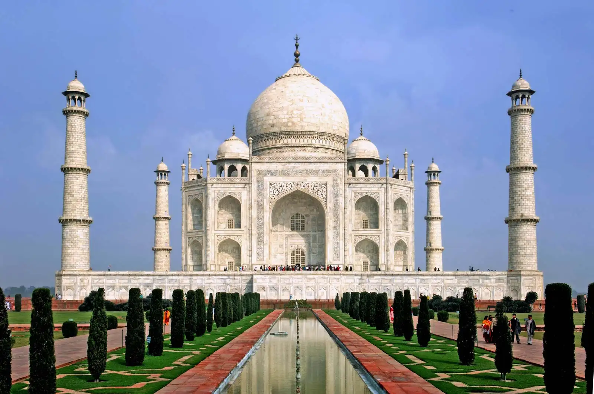
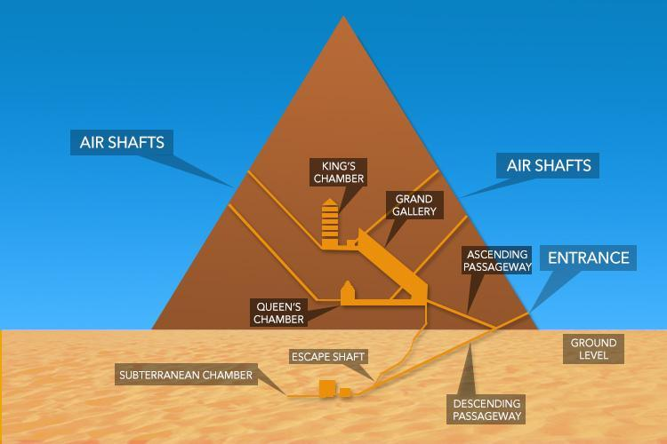
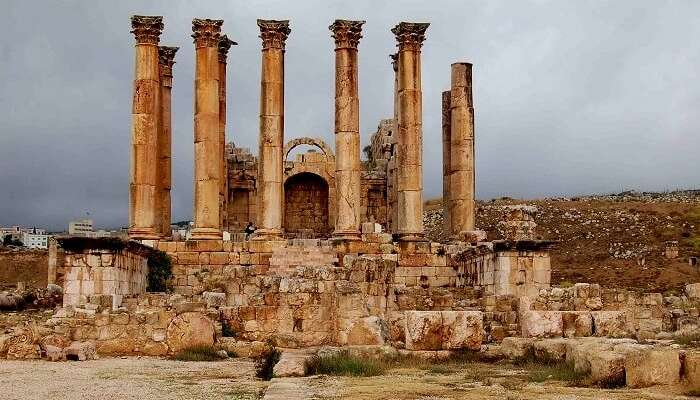
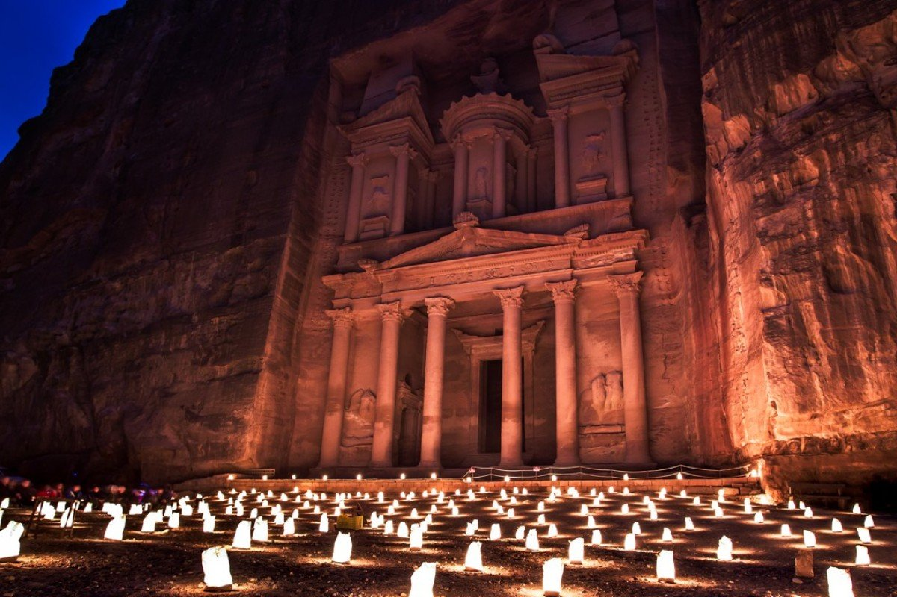

- Taj Mahal 
- the Colosseum
- The Great Pyramid of Giza 
- great wall of china
- Temple of Artemis at Ephesus 
- Petra 
- Machu Picchu
- Christ the Redeemer


World is filled with the most unique structures that are both man-made and natural. Some of the man-made creations include churches, tombs, temples, monuments, mosques, buildings and even cities.
These structures have withstood the test of time and they continue to leave many awestruck with their brilliance. There are many in the world, but only seven are selected, which are deemed to be the best.At present, as chosen by the New7Wonders Foundation, Seven Wonders of the World are the Taj Mahal, the Colosseum, the Chichen Itza, Machu Picchu, Christ the Redeemer, Petra, and the Great Wall of China. Added to the list is the Great Pyramid of Giza, though it is just considered an honorary candidate and not a wonder of the world.In 2000 a Swiss foundation launched a campaign to determine the New Seven Wonders of the World. Given that the original Seven Wonders list was compiled in the 2nd century BCE—and that only one entrant is still standing (the Pyramids of Giza)—it seemed time for an update. And people around the world apparently agreed, as more than 100 million votes were cast on the Internet or by text messaging. The final results, which were announced in 2007, were met with cheers as well as some jeers—a number of prominent contenders, such as Athens’s Acropolis, failed to make the cut.Great might be an understatement. One of the world’s largest building-construction projects, the Great Wall of China is widely thought to be about 5,500 miles (8,850 km) long; a disputed Chinese study, however, claims the length is 13,170 miles (21,200 km). Work began in the 7th century BCE and continued for two millennia. Although called a “wall,” the structure actually features two parallel walls for lengthy stretches
. In addition, watchtowers and barracks dot the bulwark. One not-so-great thing about the wall, however, was its effectiveness. Although it was built to prevent invasions and raids, the wall largely failed to provide actual security. scholars have noted that it served more as “political propaganda.”Chichén Itzá is a Mayan city on the Yucatán Peninsula in Mexico, which flourished in the 9th and 10th centuries CE. Under the Mayan tribe Itzá—who were strongly influenced by the Toltecs—a number of important monuments and temples were built. Among the most notable is the stepped pyramid El Castillo (“The Castle”), which rises 79 feet (24 meters) above the Main Plaza. A testament to the Mayans’ astronomical abilities, the structure features a total of 365 steps, the number of days in the solar year. During the spring and autumnal equinoxes, the setting sun casts shadows on the pyramid that give the appearance of a serpent slithering down the north stairway; at the base is a stone snake head. Life there was not all work and science, however. Chichén Itzá is home to the largest tlachtli (a type of sporting field) in the Americas. On that field the residents played a ritual ball game popular throughout pre-Columbian Mesoamerica. .
| Body | woders of World |
| Taj Mahal | located at Dharmapuri, Forest Colony, Tajganj, Agra, Uttar Pradesh |
| the Colosseum | Located at Piazza del Colosseo, 1, 00184 Roma RM, Italy |
| Great Pyramid of Giza | located at Al Haram, Nazlet El-Semman, Al Giza Desert, Giza Governorate, Egypt |
| wall of china | located at Huairou District, China |
| Temple of Artemis at Ephesus | located at Turkey |
| Petra | located at jordan |
| Machu Picchu | located at Peru |
| Christ the Redeemer | located at Rio de Janeiro - RJ, Brazil |